Благотворительность · Санкт-Петербург · июль–август 2026
Как контент фонда собрали вокруг доверия и понятных способов помочь
Десять связанных тем: реальные дела фонда, полезные материалы, адресная помощь, мероприятие и диалог с аудиторией. Показываем только то, что прошло финальную проверку.
Подтверждаем созданный и утверждённый комплект. Охваты, пожертвования, регистрации и другие метрики без данных не приписываем.
После проверки один макет и серия историй исключены из показа: в доступных версиях осталось старое название мероприятия.


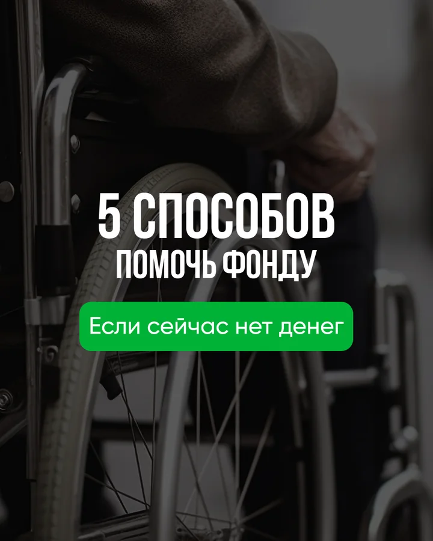
Задача контента
Помочь новой аудитории понять фонд и выбрать свой способ участия
Для благотворительного проекта недостаточно постоянно просить о помощи. Нужны прозрачность, реальные дела, полезные ориентиры и разные способы включиться.
Что важно было показать
- чем фонд занимается на практике;
- как проверить благотворительную организацию;
- как помочь деньгами, делом или распространением информации;
- зачем приходить на мероприятие фонда;
- что аудитория может влиять на следующие темы.
Как построили разговор
Контент чередует доказательства реальной работы, практическую пользу, адресные запросы, событие и вопросы к подписчикам. Поэтому лента не превращается ни в отчёт, ни в непрерывный сбор.
Главная логика: познакомить → дать опору → показать реальные дела → предложить посильное действие → продолжить диалог.
Реальные дела
Показать конкретную работу фонда и укрепить доверие.
Польза
Дать проверочный список и способы помочь без денег.
Адресная помощь
Объяснить, что необходимо фонду прямо сейчас.
Мероприятие
Познакомить с событием и ценностью участия.
Диалог
Вовлечь аудиторию в разговор о доброте и будущих темах.
Проверенные одиночные макеты
Семь публикаций, которые можно рассмотреть крупно
В плане было восемь одиночных постов. Макет №9 не показываем: при проверке в нём обнаружили старую формулировку названия мероприятия.
Две карусели · 14 слайдов
Полезные темы раскрыты последовательно
Стрелками можно пройти весь сценарий, а миниатюры помогают сразу открыть нужный слайд.
Публикация 02 · 7 слайдов
Как проверить фонд за 5 минут
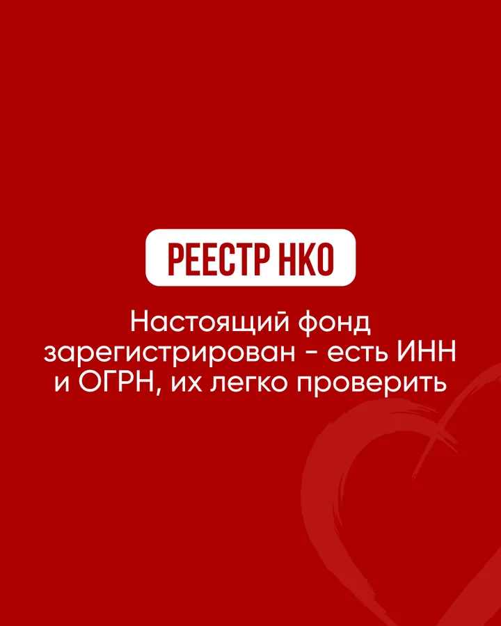
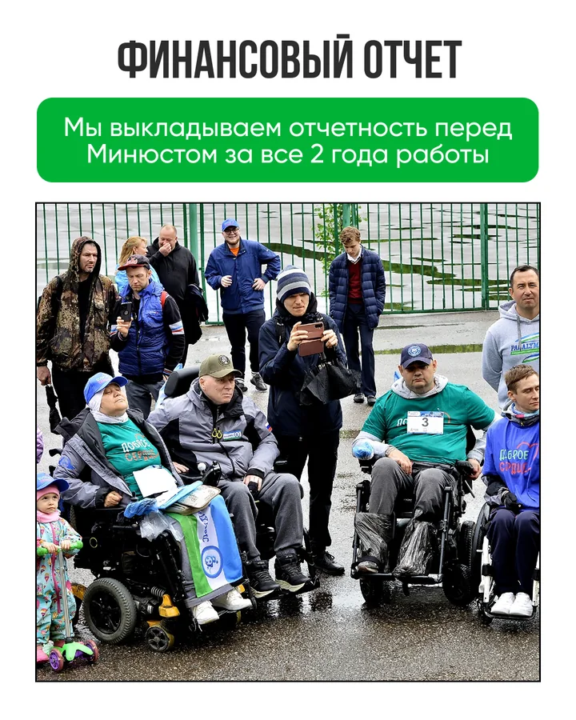
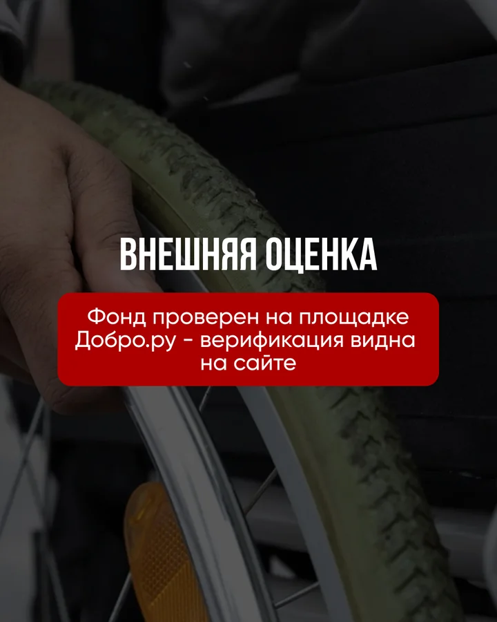
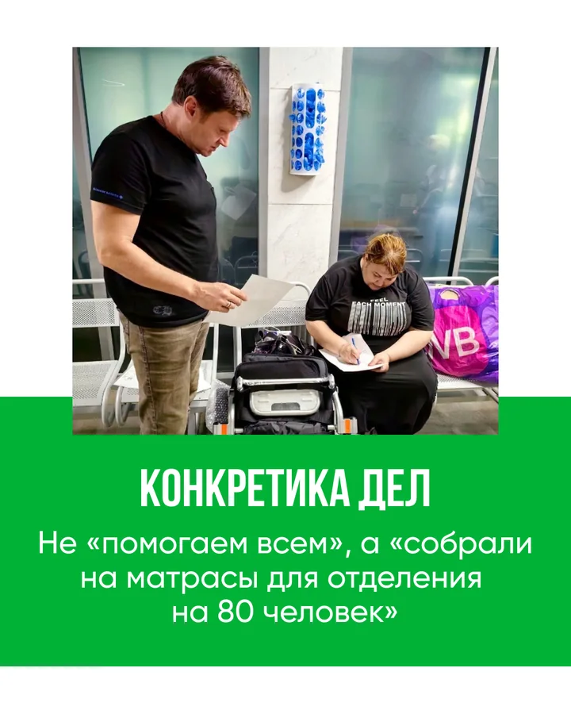
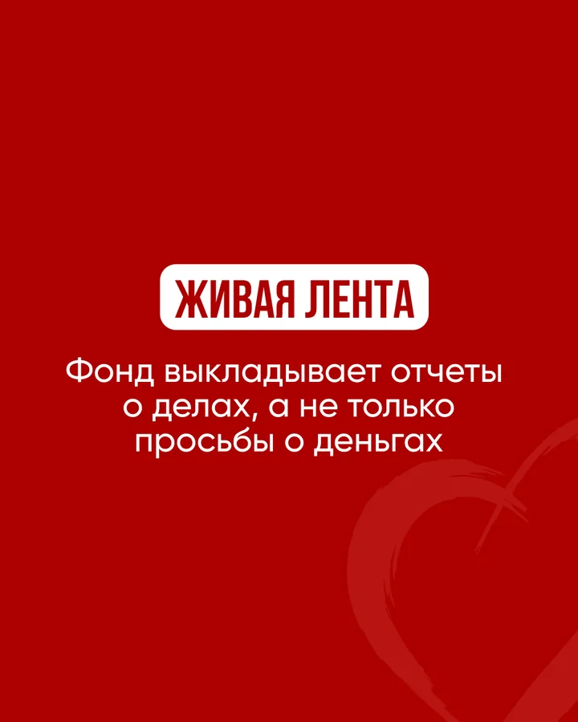
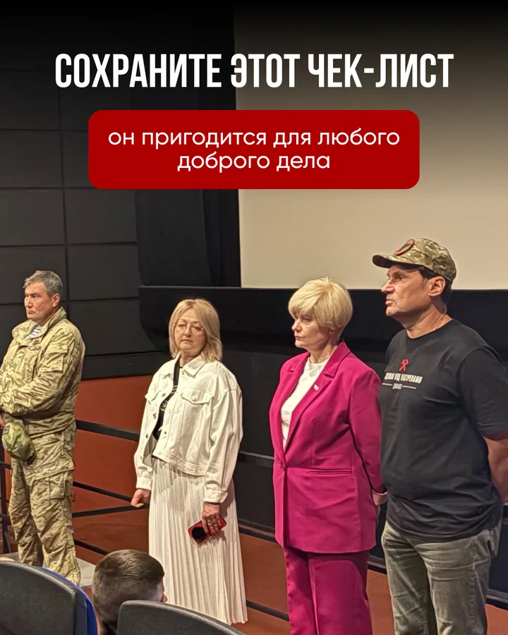
1 / 7
Публикация 07 · 7 слайдов
Пять способов помочь без денег
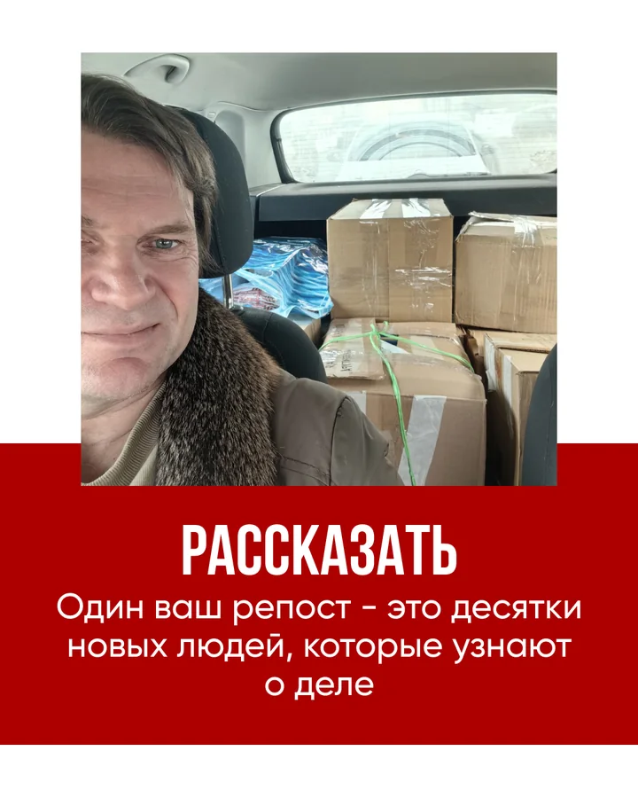
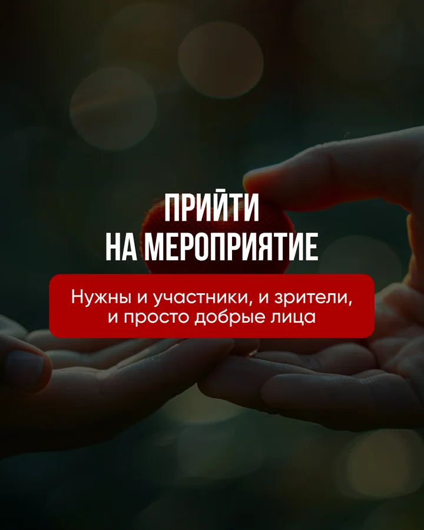
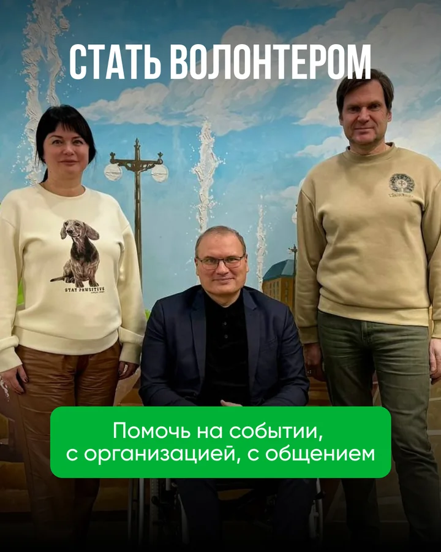
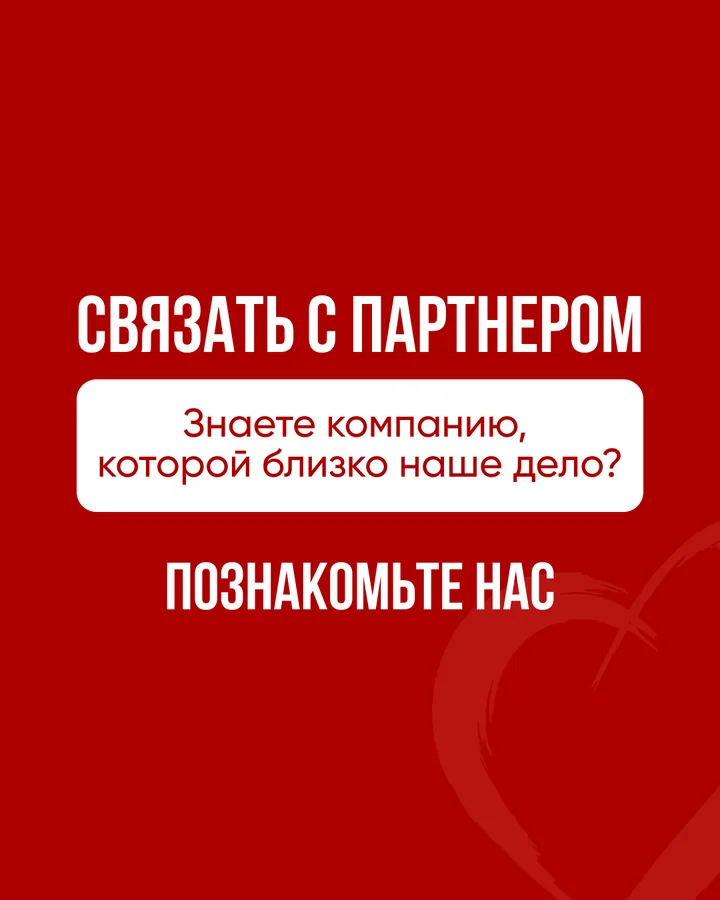
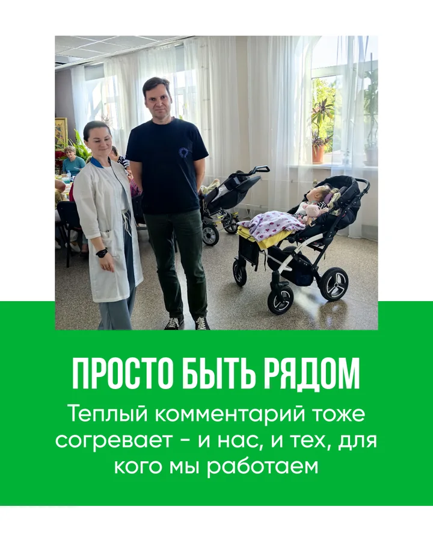
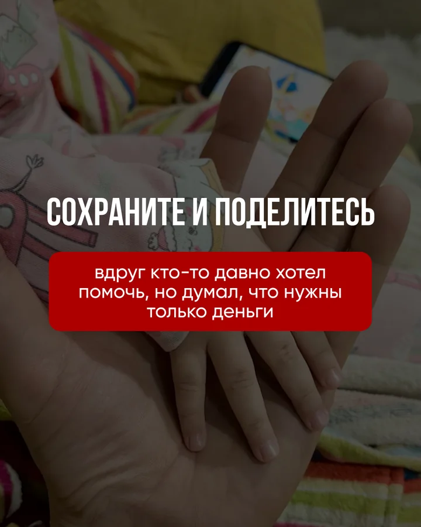
1 / 7
Границы доказательств
Показываем продукт честно, без выдуманных результатов
Этот кейс подтверждает объём, маркетинговую логику и визуальное качество произведённого контента.
Что подтверждено
- 10 тем и текстов в контент-плане;
- 8 одиночных постов и 2 карусели;
- по 7 слайдов в каждой карусели;
- утверждение визуальной концепции;
- 21 изображение после финальной проверки.
Чего мы не заявляем
В исходных данных нет подтверждённых охватов, пожертвований, регистраций, заявок или роста аудитории.
Также нет прямых ссылок на все публикации, поэтому не утверждаем размещение полного комплекта на каждой площадке.
Что исключили после проверки
Не показываем макет публикации №9 и пять историй: в доступных файлах осталось старое название мероприятия.
Их можно вернуть в кейс только после получения исправленных финальных версий.
Нужен связный контент-месяц?
Начните с 10 публикаций и усиливайте каруселями важные темы
Команда готовит контент-план, тексты и дизайн. Карусели добавляются там, где одну мысль действительно полезно раскрыть последовательно.